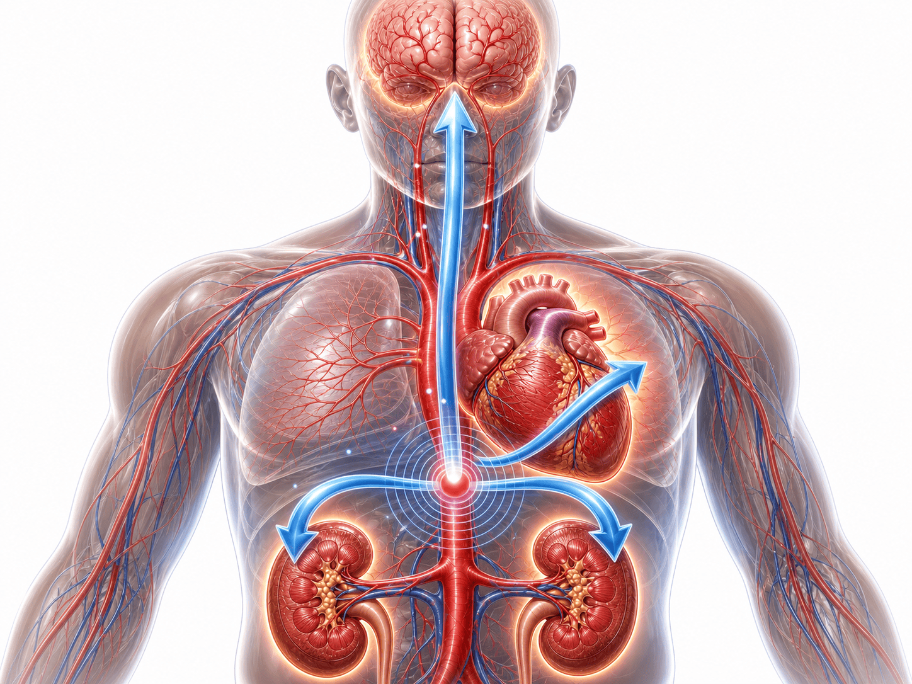
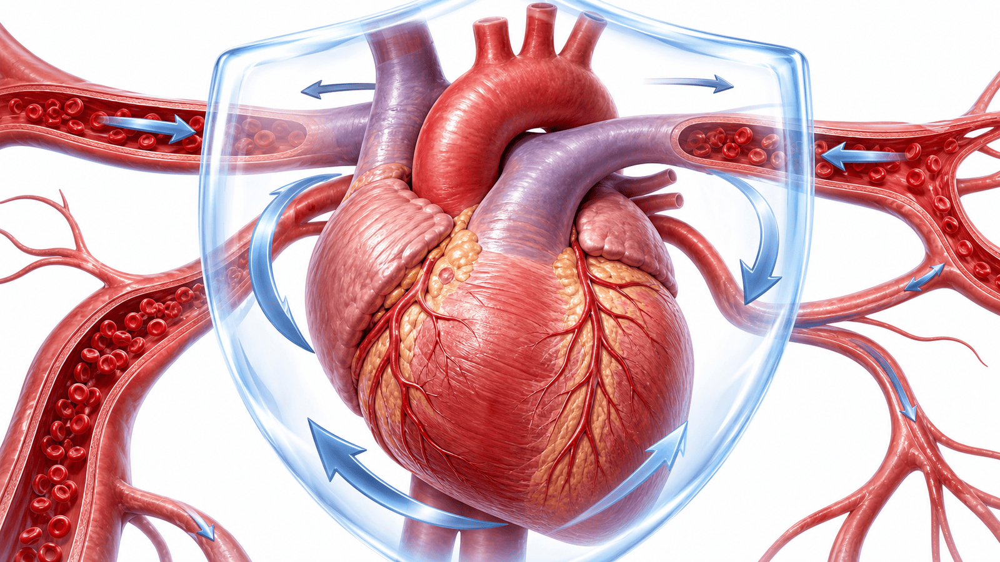
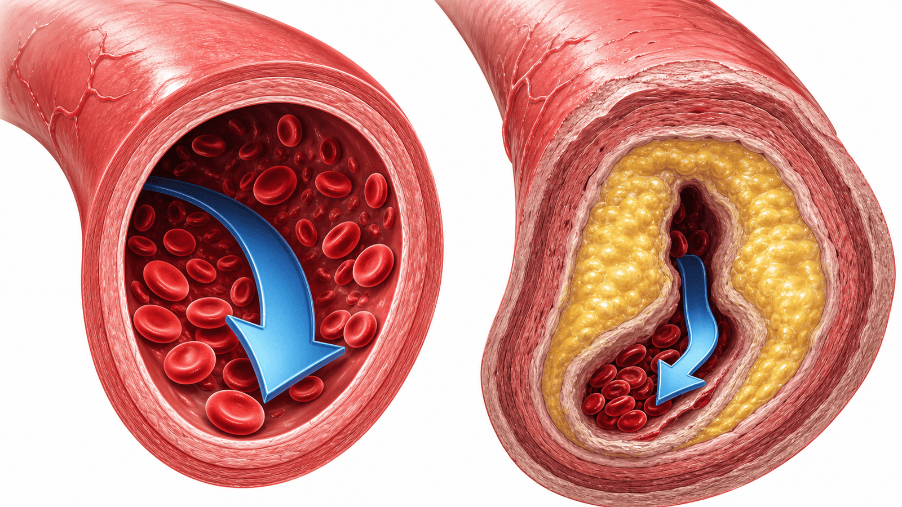
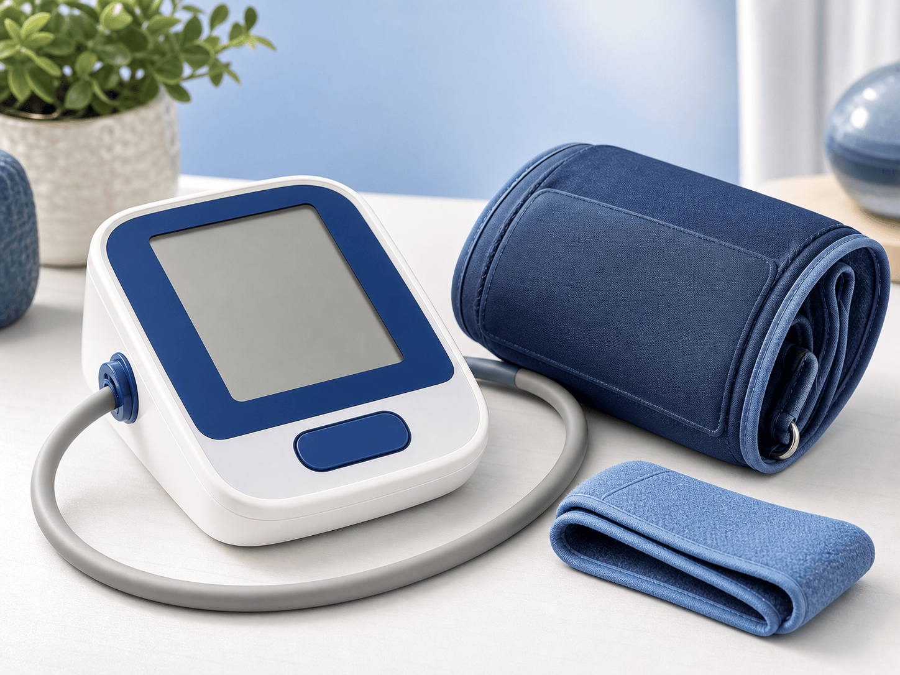

2형당뇨 강압치료,
SBP<130의 심혈관 이득
2형당뇨병 환자에서 강력한 혈압조절(SBP<130) vs 표준조절 — 주요심혈관사건(MACE) RR 0.80·뇌졸중 RR 0.73 감소. 9개 RCT·34,260명 메타분석. 2026 Front Endocrinol (PMID 42375334).
한 문단·세 숫자로 요약
강력한 강압(SBP<130) vs 표준조절 — 심혈관 이득 뚜렷·뇌졸중 감소 크고·저혈압은 주의
(95% CI 0.73–0.89, p<0.001)
(95% CI 0.60–0.87, p=0.008)
(95% CI 1.01–20.99, p=0.05 · 경계)
왜 당뇨 환자에서 강압이 중요한가
고혈압은 뇌·심장·신장 표적장기(target organ)를 손상 — 당뇨병과 겹치면 위험이 배가된다

당뇨 + 고혈압 = 위험의 상승작용
- 동반 유병 — 2형당뇨병 환자의 60% 이상이 고혈압을 동반
- 뇌 — 높은 혈압은 뇌소혈관 손상 → 뇌졸중 (stroke) 위험 ↑
- 심장 — 좌심실 비대·심부전·심근경색 (MI) 위험 ↑
- 신장 — 사구체 고압 → 단백뇨·만성신장병 (CKD) 진행 ↑
- 목표 논쟁 — 얼마나 낮춰야 하나? <140 vs <130 mmHg
- 본 메타분석 — 9개 RCT·34,260명으로 SBP<130 이득을 정량화
Systematic Review & Meta-analysis 설계
2형당뇨병 강압치료 RCT 9개 통합 — 강력조절 vs 표준조절, random-effects 모형
효능 — 심혈관 결과 forest plot 요약
강력조절 vs 표준조절. 좌측(녹색) = 강압 유리(RR<1), 우측(빨강) = 강압 불리. ● 점추정, 막대 = 효과크기
p<0.001 (유의)
p=0.008 (유의)
유의한 차이 없음

기전 — 왜 뇌졸중에서 이득이 큰가
높은 혈압이 뇌혈관을 손상시키는 경로 — 강압이 이 손상을 되돌린다
🧠 뇌소혈관 손상
지속적 고혈압은 뇌 소혈관 (small vessel)의 내막을 두껍게 하고 내강을 좁혀 열공경색·미세출혈을 유발한다.
💧 강압의 직접 효과
혈압을 낮추면 혈관벽 전단응력 (shear stress) 이 줄어 죽상경화·파열 위험이 감소 — 허혈성·출혈성 뇌졸중 모두 예방.
🩸 뇌졸중 우선 반응
뇌혈류는 심근·심부전 경로보다 혈압에 직접적·즉각적으로 반응 — 그래서 본 분석에서 뇌졸중 감소가 가장 뚜렷.
⚖️ 심부전·MI는 복합
심부전·심근경색은 혈압 외 관상동맥·혈당·지질 등 다인자 영향 — 강압 단독 효과가 개별 성분에서는 희석된다.

하위군 분석 — 어떤 환자에서 이득이 큰가
목표혈압 강도·이완기 목표 유무가 이득을 좌우 — 동반 혈당·지질 조절은 효과에 영향 없음
🎯 SBP<130 목표
수축기혈압 <130 mmHg를 지향한 시험에서 이득이 더 컸다 — 더 낮은 목표가 더 큰 심혈관 보호로 이어짐.
📊 <130 vs <140
표준적 <140 목표 대비 <130 목표군에서 MACE·뇌졸중 감소폭이 더 뚜렷하게 관찰되었다.
📉 명시적 이완기 목표
이완기혈압 (DBP) 목표를 함께 명시한 시험에서 이득이 더 컸다 — 수축기·이완기 통합 조절의 중요성.
🩸 동반 혈당조절
강력한 혈당조절 동반 여부는 강압의 심혈관 효과를 바꾸지 않았다 (effect modification 없음).
🧈 동반 지질조절
강력한 지질조절 동반 여부 역시 강압 효과를 변화시키지 않았다 — 강압 이득은 독립적.
🔑 핵심 시사점
이득의 핵심 조건은 충분히 낮은 목표(SBP<130) + 이완기 목표 — 병용 위험인자 관리와 무관하게 강압 자체가 유효.
안전성 — 저혈압 신호 vs 그 외 이상반응
저혈압 (hypotension)이 경계적으로 증가 · 그 외 이상반응은 두 군 간 차이 없음
가정혈압으로 안전하게 목표에 도달
진료실 혈압만으로 강압하면 저혈압 위험 — 가정혈압을 보며 단계적으로 낮춘다

단계적 강압 실천 요령
- 측정 습관 — 아침 기상 후·취침 전 2회, 앉아 5분 안정 후 측정
- 목표 — 가정혈압 기준 SBP<130 mmHg를 무리 없이 지향
- 단계적 도달 — 급격한 강압 금지, 수 주에 걸쳐 서서히 낮춤
- 기립혈압 — 고령·다약제 환자는 앉았다 일어설 때 혈압 확인
- 저혈압 증상 — 어지럼·실신감 시 즉시 의료진과 용량 조정
- 기록 지참 — 가정혈압 수첩·앱 기록을 진료 시 함께 검토
가이드라인 맥락 — 근거의 정합성
본 메타분석은 최신 고혈압·심장-신장-대사 통합 관리 기조와 방향이 일치한다
🩺 2025 AHA/ACC 고혈압
고혈압 진단·치료 기준을 130/80 mmHg로 유지. 당뇨병 등 고위험군에서 적극적 강압을 권고 — 본 분석의 SBP<130 이득과 방향이 일치.
🔗 2026 CKM 프레임워크
AHA/ACC/ADA/ASN 심장-신장-대사 (CKM) 단계별 통합 관리. 혈압·혈당·신장·지질을 하나의 위험 스펙트럼으로 접근한다.
🎯 목표혈압 근거
더 낮은 목표(SBP<130)가 더 큰 심혈관 보호로 이어진다는 본 결과가 가이드라인의 적극적 강압 기조를 뒷받침.
🧠 뇌졸중 예방 정합
강압의 이득 중 뇌졸중 감소가 가장 뚜렷 — 뇌졸중 부담이 큰 당뇨병 환자에서 적극적 강압의 명분이 강화된다.
🩺 신장(KDIGO) 연계
당뇨병성 신장병 혈압 관리와 정합. 강압은 단백뇨·CKD 진행 억제와 연계되어 심혈관·신장 위험을 함께 낮춘다.
🧩 통합 위험 관리
개별 위험인자보다 통합 위험을 낮추는 전략으로 수렴. 혈압·혈당·지질·신장을 하나의 틀에서 함께 추적한다.
진료실 실천 체크리스트
당뇨+고혈압 환자 상담 시 바로 적용 — 목표 설정·안전한 강압·모니터링
Take-home 4가지
2형당뇨 강압치료(SBP<130) — 진료실 바로 적용 가능 요약
경기도 용인시 수지구 광교중앙로 298, 4층 402-404호